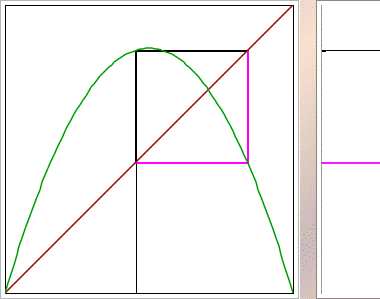
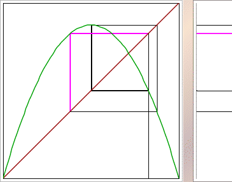
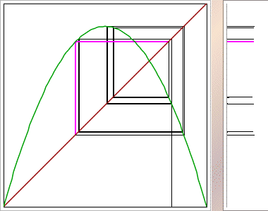

| s = 3.4 |  |
| s = 3.5 |  |
| s = 3.55 |  |
|
| The cycle for L consists of the points from both cycles of L2. |
| For example, when L2 has two fixed points, L has a 2-cycle. |
| Note that the cycles for L visit
points in the central and right squares alternately, so the iterates of L2
stay in the right square or stay in the central square. |
|